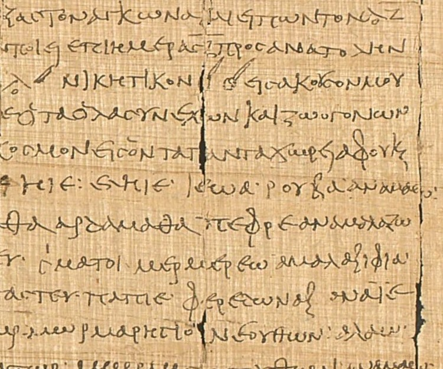
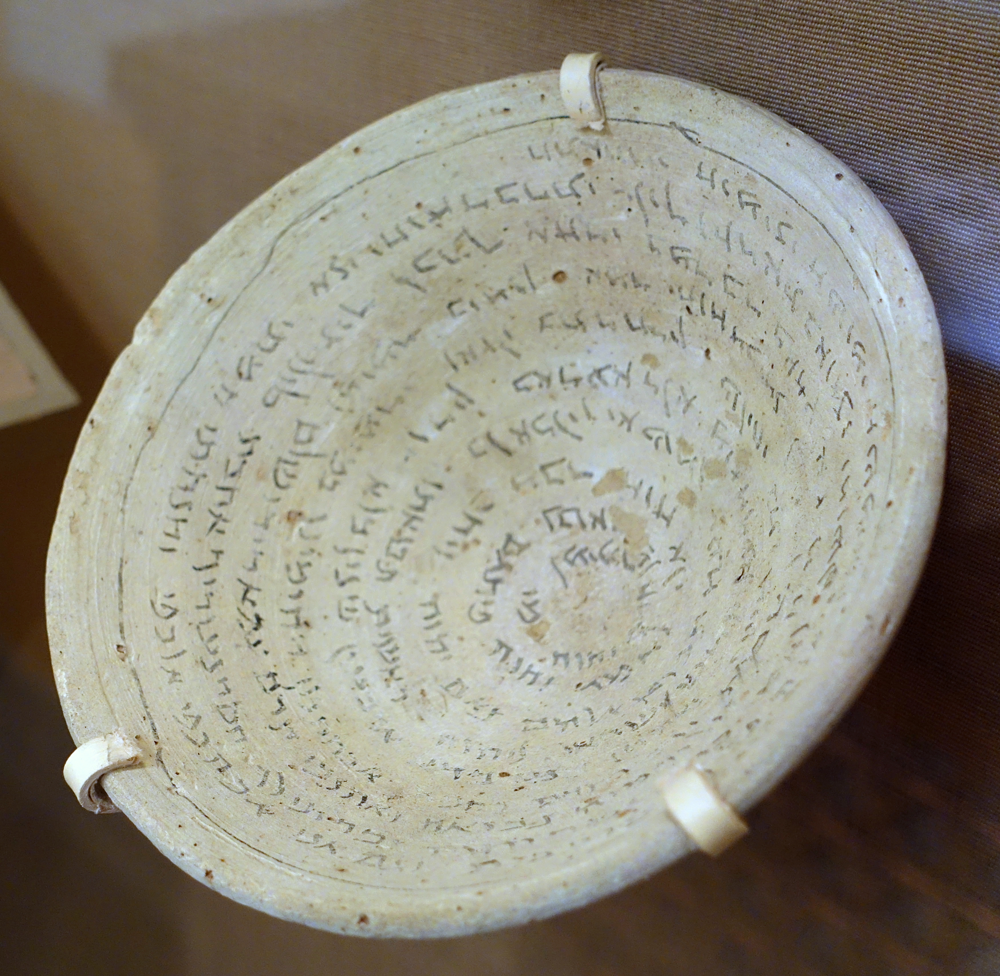
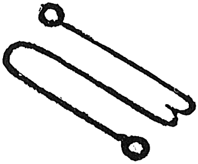
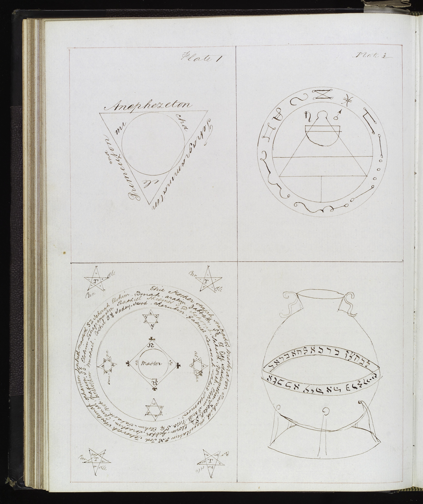

Fractal Dimension by Rank
Legions vs Complexity
Line Orientation Distribution (All Sigils)
Fractal Dimension Distribution
Symmetry (Horizontal vs Vertical)
Junctions vs Endpoints
Sigil Complexity Across the Goetia Sequence (colored by rank)
Average Radial Profile by Cluster
Feature Comparison Across Clusters
– 400 CE

Greek Magical Papyri (PGM) — Charakteres
The Papyri Graecae Magicae is a corpus of roughly 130 papyri discovered in Egypt, written in Greek, Demotic, and Coptic, spanning the 2nd century BCE through the 5th century CE. They represent a syncretized Greco-Egyptian magical tradition blending Hellenistic, Egyptian, Jewish, and later Christian elements.
Among the most significant features of the PGM are the charakteres (χαρακτῆρες) — abstract signs of indeterminate referent inscribed to compel divine, angelic, or demonic entities. They appear alongside voces magicae (untranslatable power-words), nomina barbara, and divine names. Charakteres are not pictographic, not alphabetic, and not representational: they are self-contained power-forms whose efficacy lies in the act of inscription and the form itself. Scholarship has identified four categories of PGM magical drawings: illustrative figures, functional diagrams, shaped words, and charakteres proper.
The abstract, non-representational logic of the charakteres — signs that encode power rather than meaning — is the formal ancestor of the Western grimoire sigil tradition.
century CE

Aramaic Incantation Bowls
Earthenware bowls inscribed with spiral Aramaic text produced by Jewish, Christian Syriac, and Mandaean communities in Sasanian Babylonia (modern Iraq). Text runs in concentric spirals from rim inward to the center — a spatial form that encloses and traps demons within the bowl's interior. Many include schematic figures of bound demons at the center.
The angelic and demonic names inscribed — including Lilith, Bagdana, and sequences of names drawn from Jewish demonology — form part of the tradition of operative name-manipulation that feeds directly into the medieval Jewish magical corpus. The bowls demonstrate that the practice of writing specific named entities into material form for binding purposes is continuous from late antiquity through the medieval grimoire tradition.
The spiral inscription format is also noteworthy: the physical act of writing the spiral, working inward, enacts the binding. This connection between inscription geometry and magical function anticipates the Key of Solomon's attention to the spatial arrangement of names within pentacles.
century CE
Amulet page from Sefer Raziel HaMalakh (Amsterdam, 1701 ed.) — image not yet sourced. See MISSING_IMAGES.md.
Sefer ha-Razim & the Sword of Moses (Harba de-Moshe)
The Sword of Moses (Harba de-Moshe, Aramaic-Hebrew, probably 5th–10th c.) and Sefer ha-Razim ("Book of Mysteries," compiled by the 7th–10th c.) are key documents of early Jewish practical Kabbalah. Both involve the operative manipulation of angelic and divine names as magical characters written on amulets or spoken in sequences.
The Sword of Moses specifies precise sequences of angelic names arranged for operative purposes; Sefer ha-Razim organizes angels by the seven heavens and specifies the exact forms for invoking them. The later Sefer Raziel HaMalakh (compiled c. 13th c., standardized in the 1701 Amsterdam printed edition) integrates these traditions with Kabbalistic cosmology and includes illustrated amulet diagrams — layered grids of Hebrew divine names and characters in specific spatial arrangements.
These texts establish the principle that angelic and demonic entities have specific written forms — names arranged in particular patterns — that function as their seals. This is the direct conceptual ancestor of the spirit seal in the Solomonic tradition.
(earliest MSS)
Nota diagram from the Ars Notoria — image not yet sourced. See MISSING_IMAGES.md.
Ars Notoria (Notory Art of Solomon)
The Ars Notoria claims Solomonic authorship and consists of prayers, divine names, and notae — complex ritual diagrams that combine geometric figures, symbolic imagery, and inscribed divine and angelic names — to be contemplated during ritual prayer to obtain angelic knowledge of specific arts (grammar, rhetoric, philosophy, theology, medicine).
The notae are not spirit-binding sigils; they are contemplative objects. But they share the same formal logic as the sigil: an abstract inscribed form, combining geometric construction with divine names and symbols, that mediates between practitioner and celestial beings. The practitioner gazes at the nota during prayer — the form is the interface. The 1657 Turner English translation notably omits the notae drawings, which survive only in the Latin manuscripts.
The Ars Notoria circulated alongside the Key of Solomon in medieval and Renaissance manuscript collections, and the two traditions cross-pollinated: the Sworn Book of Honorius (see below) drew on both.
(Latin c.1256)
Manuscript page from the Picatrix showing talisman figures — image not yet sourced. See MISSING_IMAGES.md.
Picatrix (Ghāyat al-Ḥakīm)
The Picatrix (Arabic: Ghāyat al-Ḥakīm, "Goal of the Wise") is a handbook of astrological magic compiled in Arabic c. 1000 CE, translated into Castilian under Alfonso X of Castile c. 1256, and from Castilian into Latin shortly after. It systematizes the construction of astrological talismans by specifying planetary figures, appropriate materials, and precise timing for inscribing images onto metal, stone, or parchment.
The Picatrix's talisman figures are schematic planetary images — simplified geometric or anthropomorphic figures with inscribed names — that must be produced under the correct planetary hour and sign. Its influence on the European magical tradition was significant: Ficino, Agrippa, and the authors of the Key of Solomon all drew on it, and its planetary attributions (Saturn = lead, Jupiter = tin, Mars = iron, etc.) feed directly into the material specifications of Solomonic pentacle construction.
Crucially, the Picatrix establishes the principle that talisman efficacy depends not only on the inscribed form but on the precise conditions of construction — a procedural logic also present in the Key of Solomon's elaborately specified ritual preparation requirements.
(MS); tradition
10th–12th c.

Hygromanteia (MS Harley 5596)
British Library MS Harley 5596 is a 15th-century Greek manuscript of the Hygromanteia ("water divination"), a Byzantine Solomonic grimoire. The text belongs to a Greek Solomonic tradition that appears to predate the Latin Key of Solomon manuscripts and may represent one of the tradition's primary sources rather than a derivative.
The Hygromanteia includes spirit hierarchies, magical seals, conjuration procedures, and protective rituals organized in ways structurally parallel to the Latin Clavicula Salomonis. It demonstrates that the Solomonic magical tradition circulated in the Christian East — through Byzantine channels — as well as in the Latin West, and that the spirit-seal system was not a purely Western medieval invention but draws on an older Greek-speaking magical culture continuous with the late antique PGM tradition.
The manuscript's presence in the Harley collection (assembled by Robert Harley, 1st Earl of Oxford, in the early 18th century) shows it entered Western European scholarly circulation; Mathers and later editors of the Key of Solomon were likely aware of related Greek Solomonic material.
century MSS
Key of Solomon (Clavicula Salomonis)
The Key of Solomon (Latin: Clavicula Salomonis) survives in numerous manuscripts across European libraries — British Library Sloane MSS, Bibliothèque de l'Arsenal (Paris), BL Oriental MSS, Wellcome Collection — with the earliest surviving copies from the 14th or 15th century. It provides the most fully developed pre-Goetia system of Solomonic magic.
Its core contribution is the planetary pentacle system: seven sets of ritual diagrams (one set per classical planet), each pentacle constructed according to explicit visual rules — Hebrew divine names (Tetragrammaton, Elohim, Adonai, and others) arranged in specific geometric patterns, sometimes surrounding a central figure, sometimes forming the figure itself. The First Pentacle of the Moon (Sloane 3091, shown) demonstrates the grammar: concentric bands of divine names, Hebrew characters arranged in a pattern, geometric framing.
This is the immediate formal predecessor of the Goetia sigil: a bounded inscriptive form assigned to a specific spirit or celestial power, constructed according to rules that combine divine names with geometric structure. The Key of Solomon also includes spirit-specific seals separate from the planetary pentacles — seals that function as individual identifying marks for summoned spirits.
variant

Clavicula Salomonis — Arabic Manuscript Tradition
British Library Oriental MS 14759 is an Arabic-language manuscript of the Key of Solomon tradition, showing that the Clavicula Salomonis circulated not only in Latin and Greek but also in Arabic, transmitted through the same Islamicate scholarly networks that produced the Picatrix. This cross-linguistic transmission is evidence for the deep roots of the Solomonic sigil tradition in the broader medieval Mediterranean magical synthesis.
The Arabic Key of Solomon manuscripts represent a separate transmission path from the Latin and Greek versions, and comparing them helps identify which elements of the sigil system are core (present in all versions) versus which are later additions specific to the Western European tradition that produced the Goetia.

De Occulta Philosophia — Kamea Sigil Method
Heinrich Cornelius Agrippa's De Occulta Philosophia libri tres (1531) provides the most systematic published account of the magic square sigil method. He assigns a kamea (magic square of order 3–9) to each of the seven classical planets — the 3×3 Saturn kamea, the 4×4 Jupiter kamea, the 5×5 Mars kamea, and so on. Each cell of the kamea contains a number.
To derive a spirit's sigil: convert the spirit's Hebrew name to numbers via gematria (each Hebrew letter has a standard numerical value); locate those numbers in sequence on the kamea; draw lines connecting them. The resulting path through the magic square is the sigil. The Intelligence of Saturn, Agiel (Hebrew: אגיאל = 1-3-10-1), traces a specific path across the 3×3 Saturn square — as shown in the figure.
This method systematizes what had been a less explicit tradition in the Key of Solomon manuscripts. It gives sigil construction a repeatable, rule-governed procedure grounded in Hebrew numerology and planetary mathematics — and it was widely read and reproduced by the authors who compiled the Goetia in the following century.
Page from Weyer's De Praestigiis Daemonum (1577) showing the Pseudomonarchia Daemonum appendix — image not yet sourced. See MISSING_IMAGES.md.
Pseudomonarchia Daemonum (Johann Weyer)
Johann Weyer's Pseudomonarchia Daemonum ("False Monarchy of Demons") was appended to the fourth edition of his De Praestigiis Daemonum (1577), though it was likely drawn from an earlier Solomonic source. It names 69 demons — 65 of whom appear in the Goetia — lists their ranks, legions, and abilities, and provides brief conjuration instructions. Crucially, it does not include sigils.
The Pseudomonarchia represents a transitional document: it has the Goetia's spirit list (or a closely related version of it) but not the Goetia's sigil system. This establishes that the spirit list and the sigils were originally separate traditions combined at some point before the earliest extant Goetia manuscripts (c. 1640s–1650s). The sigil system was presumably grafted onto the Weyer-derived spirit list using the Agrippan kamea method or a related Solomonic sigil-construction procedure.
Comparing Weyer's spirit list with the Goetia's reveals small but significant differences in names, ranks, and ordering — useful data for manuscript stemma analysis.
MS

Wellcome Solomonic Seals (19th-century MS)
This 19th-century manuscript from the Wellcome Collection is evidence of the continued scribal reproduction of the Solomonic magical circle and seal tradition centuries after the original grimoire corpus was codified. The visual vocabulary — concentric circle structures, inscribed divine names (Tetragrammaton, Agla, On, El), cross-inscribed pentagram designs, spirit-binding seals — remains consistent with the 14th–17th century manuscript tradition.
Included here as a data point in tradition durability: the sigil tradition did not become antiquarian or fossilized after the early modern period but continued as a living scribal practice. The Goetia was itself still being copied and used in the 19th century; the Wellcome manuscript shows the broader Solomonic visual grammar maintaining coherence across 500 years of transmission.
(c. 1640s–1650s)

Ars Goetia — The 72 Seals
The Ars Goetia, the first book of the Lemegeton Clavicula Salomonis ("Lesser Key of Solomon"), names, ranks, and provides individual seals for 72 demons said to have been bound by Solomon. The earliest extant manuscripts date to the mid-17th century; Dr. John Rudd's version (c. 1655) is among the most studied. The 1904 Aleister Crowley / S.L. MacGregor Mathers edition introduced the text to wide modern readership.
The 72 sigils represent the convergence of the full tradition documented above: the abstract power-sign logic of the PGM charakteres, the Jewish tradition of named-entity inscription for binding purposes, the Solomonic pentacle grammar from the Key of Solomon, and the systematized kamea-derivation method from Agrippa. Each sigil is an orthogonal-grid-based abstract construction — predominantly horizontal and vertical strokes, modular, non-representational — serving as the unique inscribed identifier for a specific named demon.
This site's analysis reverse-engineers the construction grammar of these 72 seals: identifying the 8 structural families, the shared visual vocabulary, the angle distribution confirming the orthogonal-grid hypothesis, and the statistical independence of sigil structure from the textual attributes of the demons they represent.